Plotting¶
The graphical representation of data—plotting—is one of the most important tools for evaluating and understanding scientific data and theoretical predictions. However, plotting is not a part of core Python but is provided through one of several possible library modules. The most highly developed and widely used plotting package for Python is MatPlotLib (http://MatPlotLib.sourceforge.net/). It is a powerful and flexible program that has become the de facto standard for 2-d plotting with Python.
Because MatPlotLib is an external library—in fact it’s a collection of libraries—it must be imported into any routine that uses it. MatPlotLib makes extensive use of NumPy so the two should be imported together. Therefore, for any program for which you would like to produce 2-d plots, you should include the lines
import numpy as np
import matplotlib.pyplot as plt
There are other MatPlotLib sub-libraries, but the pyplot library provides nearly everything that you need for 2-d plotting. The standard prefix for it is plt. The two statements above must appear before any calls to NumPy or MatPlotLib routines are made. MatPlotLib is automatically loaded with the IPython shell so you do not need to use import matplotlib.pyplot nor do you need to use the plt prefix when working in the IPython shell.
One final word before we get started: We only scratch the surface of what is possible using MatPlotLib and as you become familiar with it, you will surely want to do more than this manual describes. In that case, you need to go the the web to get more information. A good place to start is http://matplotlib.org/api/pyplot_summary.html. Another interesting web page is http://matplotlib.org/gallery.html.
An interactive session with pyplot¶
We begin with an interactive plotting session that illustrates some very basic features of MatPlotLib. Type in the plot command shown below and press the return key. Take care to follow the exact syntax.
In [1]: plot([1,2,3,2,3,4,3,4,5])
Out[1]: [<MatPlotLib.lines.Line2D at 0x94e1310>]
Interactive plot window
A window should appear with a plot that looks something like the Interactive plot window shown here. By default, the plot function draws a line between the data points that were entered. You can save this plot to an image file by clicking on the floppy disk icon at the top of the plot window. You can also zoom, pan, scroll through the plot, and return to the original view using the other icons in the plot window. Experimenting with them reveals their functions.
When you are finished, be sure to close the plot window.
Let’s take a closer look at the plot function. It is used to plot  -
- data sets and is written like this
data sets and is written like this
plot(x, y)
where x and y are arrays (or lists) that have the same size. If the x array is missing, that is, if there is only a single array, as in our example above, the plot function uses 0, 1, ..., N-1 for the x array, where N is the size of the y array. Thus, the plot function provides a quick graphical way of examining a data set.
More typically, you supply both an and a data set to plot. Taking things a bit further, you may also want to plot several data sets on the same graph, use symbols as well as lines, label the axes, create a title and a legend, and control the color of symbols and lines. All of this is possible but requires calling a number of plotting functions. For this reason, plotting is usually done using a Python script or program.
Basic plotting¶
The quickest way to learn how to plot using the MatPlotLib library is by example. For our first task, let’s plot the sine function over the interval from 0 to  . The main plotting function plot in MatPlotLib does not plot functions per se, it plots
. The main plotting function plot in MatPlotLib does not plot functions per se, it plots  data points. As we shall see, we can instruct the function plot either to just draw point—or dots—at each data point, or we can instruct it to draw straight lines between the data points. To create the illusion of the smooth function that the sine function is, we need to create enough data points so that when plot draws straight lines between the data points, the function appears to be smooth. The sine function undergoes two full oscillations with two maxima and two minima between 0 and . So let’s start by creating an array with 33 data points between 0 and , and then let MatPlotLib draw a straight line between them. Our code consists of four parts
data points. As we shall see, we can instruct the function plot either to just draw point—or dots—at each data point, or we can instruct it to draw straight lines between the data points. To create the illusion of the smooth function that the sine function is, we need to create enough data points so that when plot draws straight lines between the data points, the function appears to be smooth. The sine function undergoes two full oscillations with two maxima and two minima between 0 and . So let’s start by creating an array with 33 data points between 0 and , and then let MatPlotLib draw a straight line between them. Our code consists of four parts
- import the NumPy and MatPlotLib modules (lines 1-2 below)
- create the data arrays (lines 3-4 below)
- have plot draw straight lines between the data points (line 5 below)
- display the plot in a figure window using the show function (line 6 below)
Here is our code, which consists of only 6 lines:
1 2 3 4 5 6 | import numpy as np
import matplotlib.pyplot as plt
x = np.linspace(0, 4.*np.pi, 33)
y = np.sin(x)
plt.plot(x, y)
plt.show()
|
Sine function
Only 6 lines suffice to create the plot, which consists of the sine function over the interval from 0 to , as advertised, as well as axes annotated with nice whole numbers over the appropriate interval. It’s a pretty nice plot made with very little code.
One problem, however, is that while the plot oscillates like a sine wave, it is not smooth. This is because we did not create the arrays with enough data points. To correct this, we need more data points. The plot below was created using the same program shown above but with 129 data points instead of 33. Try it out your self by copying the above program and replacing 33 in line 3 with 129 so that the function linspace creates an array with 129 data points instead of 33.
Sine function plotted using more data points
The code above illustrates how plots can be made with very little code using the MatPlotLib module. In making this plot, MatPlotLib has made a number of choices, such as the size of the figure, the blue color of the line, even the fact that by default a line is drawn between successive data points in the arrays. All of these choices can be changed by explicitly instructing MatPlotLib to do so. This involves including more arguments in the function calls we have used and using new functions that control other properties of the plot. The next example illustrates a few of the simpler embellishments that are possible.
In the Wavy pulse figure, we plot two data sets: a smooth line curve and some data represented by red circles. In this plot, we label the and axes, create a legend, and draw lines to indicate where and are zero. The code that creates this plot is shown below.
1 2 3 4 5 6 7 8 9 10 11 12 13 14 15 16 17 18 19 20 21 22 23 24 25 | import numpy as np
import matplotlib.pyplot as plt
# read data from file
xdata, ydata = np.loadtxt('wavePulseData.txt', unpack=True)
# create x and y arrays for theory
x = np.linspace(-10., 10., 200)
y = np.sin(x) * np.exp(-(x/5.0)**2)
# create plot
plt.figure(1, figsize = (6,4) )
plt.plot(x, y, 'b-', label='theory')
plt.plot(xdata, ydata, 'ro', label="data")
plt.xlabel('x')
plt.ylabel('transverse displacement')
plt.legend(loc='upper right')
plt.axhline(color = 'gray', zorder=-1)
plt.axvline(color = 'gray', zorder=-1)
# save plot to file
plt.savefig('WavyPulse.pdf')
# display plot on screen
plt.show()
|
Wavy pulse
If you have read the first four chapters, the code in lines 1-9 in the above script should be familiar to you. Fist, the script loads the NumPy and MatPlotLib modules, then reads data from a data file into two arrays, xdata and ydata, and then creates two more arrays, x and y. The first pair or arrays, xdata and ydata, contain the - data that are plotted as red circles in the Wavy pulse figure; the arrays created in line 8 and 9 contain the - data that are plotted as a blue line.
The functions that do the plotting begin on line 12. Let’s go through them one by one and see what they do. You will notice in several cases that keyword arguments (kwargs) are used in several cases. Keyword arguments are optional arguments that have the form kwarg= data, where data might be a number, a string, a tuple, or some other form of data.
- figure()
- creates a blank figure window. If it has no arguments, it creates a window that is 8 inches wide and 6 inches high by default, although the size that appears on your computer depends on your screen’s resolution. For most computers, it will be much smaller. You can create a window whose size differs from the default using the optional keyword argument figsize, as we have done here. If you use figsize, set it equal to a 2-element tuple where the elements are the width and height, respectively, of the plot. Multiple calls to figure() opens multiple windows: figure(1) opens up one window for plotting, figure(2) another, and figure(3) yet another.
- plot(x, y, optional arguments )
- graphs the
- xlabel( string )
- takes a string argument that specifies the label for the graph’s
- ylabel( string )
- takes a string argument that specifies the label for the graph’s
- legend()
- makes a legend for the data plotted. Each
- axhline()
- draws a horizontal line across the width of the plot at y=0. The optional keyword argument color is a string that specifies the color of the line. The default color is black. The optional keyword argument zorder is an integer that specifies which plotting elements are in front of or behind others. By default, new plotting elements appear on top of previously plotted elements and have a value of zorder=0. By specifying zorder=-1, the horizontal line is plotted behind all existing plot elements that have not be assigned an explicit zorder less than -1.
- axvline()
- draws a vertical line from the top to the bottom of the plot at x=0. See axhline() for explanation of the arguments.
- savefig( string )
- saves the figure to data data file with a name specified by the string argument. The string argument can also contain path information if you want to save the file so some place other than the default directory.
- show()
- displays the plot on the computer screen. No screen output is produced before this function is called.
To plot the solid blue line, the code uses the 'b-' format specifier in the plot function call. It is important to understand that MatPlotLib draws straight lines between data points. Therefore, the curve will appear smooth only if the data in the NumPy arrays are sufficiently dense. If the space between data points is too large, the straight lines the plot function draws between data points will be visible. For plotting a typical function, something on the order of 100-200 data points usually produces a smooth curve, depending on just how curvy the function is. On the other hand, only two points are required to draw a smooth straight line.
Detailed information about the MatPlotLib plotting functions are available online, starting with the site http://matplotlib.org/api/pyplot_summary.html. The main MatPlotLib site is http://matplotlib.org/.
Specifying line and symbol types and colors¶
In the above example, we illustrated how to draw one line type (solid), one symbol type (circle), and two colors (blue and red). There are many more possibilities, which are specified in the tables below. The way it works is to specify a string consisting of one or more plotting format specifiers. There are two types of format specifiers, one for the line or symbol type and another for the color. It does not matter in which order the format specifiers are listed in the string. Examples are given following the two tables. Try them out to make sure you understand how these plotting format specifiers work.
The first table below shows the characters used to specify the line or symbol type that is used. If a line type is chosen, the lines are drawn between the data points. If a marker type is chosen, the a marker is plotted at each data point.
character description character description - solid line style 3 tri_left marker -- dashed line style 4 tri_right marker -. dash-dot line style s square marker : dotted line style p pentagon marker . point marker * star marker , pixel marker h hexagon1 marker o circle marker H hexagon2 marker v triangle_down marker + plus marker ^ triangle_up marker x x marker < triangle_left marker D diamond marker > triangle_right marker d thin_diamond marker 1 tri_down marker | vline marker 2 tri_up marker _ hline marker
This second table gives the character codes for eight different colors. Many more are possible but the color specification becomes more complex. You can consult the web-based MatPlotLib documentation for further details.
character color b blue g green r red c cyan m magenta y yellow k black w white
Here are some examples of how these format specifiers can be used:
plot(x, y, 'ro') # plots red circles
plot(x, y, 'ks-') # plot black squares connected by black lines
plot(x, y, 'g^') # plots green triangles that point up
plot(x, y, 'k-') # plots a black line between the points
plot(x, y, 'ms') # plots magenta squares
You can also make two calls sequentially for added versatility. For example, by sequentially calling the last two plot calls, the plot produces magenta squares on top of black lines connecting the data points.
These format specifiers give rudimentary control of the plotting symbols and lines. MatPlotLib provides much more precise and detailed control of the plotting symbol size, line types, and colors using optional keyword arguments instead of the plotting format strings introduced above. For example, the following command creates a plot of large yellow diamond symbols with blue edges connected by a green dashed line:
plot(x, y, color='green', linestyle='dashed', marker='d',
markerfacecolor='yellow', markersize=12,
markeredgecolor='blue')
Try it out! The online MatPlotLib documentation provides all the plotting format keyword arguments and their possible values.
Error bars¶
When plotting experimental data it is customary to include error bars that indicate graphically the degree of uncertainty that exists in the measurement of each data point. The MatPlotLib function errorbar plots data with error bars attached. It can be used in a way that either replaces or augments the plot function. Both vertical and horizontal error bars can be displayed. The figure below illustrates the use of error bars.
Error Bars
When error bars are desired, you typically replace the plot function with the errorbar function. The first two arguments of the errorbar function are the x and y arrays to be plotted, just as for the plot function. The keyword fmt must be used to specify the format of the points to be plotted; the format specifiers are the same as for plot. The keywords xerr and yerr are used to specify the and error bars. Setting one or both of them to a constant specifies one size for all the error bars. Alternatively, setting one or both of them equal to an array that has the same length as the x and y arrays allows you to give each data point an error bar with a different value. If you only want error bars, then you should only specify the yerr keyword and omit the xerr keyword. The color of the error bars is set with the keyword ecolor.
The code and plot below illustrates how to make error bars and was used to make the above plot. Lines 14 and 15 contain the call to the errorbar function. The error bars are all set to a constant value of 0.75, meaning that the error bars extend 0.75 to the left and 0.75 to the right of each data point. The error bars are set equal to an array, which was read in from the data file containing the data to be plotted, so each data point has a different error bar. By the way, leaving out the xerr keyword argument in the errorbar function call below would mean that only the error bars would be plotted.
1 2 3 4 5 6 7 8 9 10 11 12 13 14 15 16 17 18 19 20 21 22 23 24 | import numpy as np
import matplotlib.pyplot as plt
# read data from file
xdata, ydata, yerror = np.loadtxt('expDecayData.txt', unpack=True)
# create theoretical fitting curve
x = np.linspace(0, 45, 128)
y = 1.1+ 3.0*x*np.exp(-(x/10.0)**2)
# create plot
plt.figure(1, figsize = (6,4) )
plt.plot(x, y, 'b-', label="theory")
plt.errorbar(xdata, ydata, fmt='ro', label="data",
xerr=0.75, yerr=yerror, ecolor='black')
plt.xlabel('x')
plt.ylabel('transverse displacement')
plt.legend(loc='upper right')
# save plot to file
plt.savefig('ExpDecay.pdf')
# display plot on screen
plt.show()
|
We have more to say about the errorbar function in the sections on logarithmic plots. But the brief introduction given here should suffice for making most plots not involving logarithmic axes.
Setting plotting limits and excluding data¶
It turns out that you often want to restrict the range of numerical values over which you plot data or functions. In these cases you may need to manually specify the plotting window or, alternatively, you may wish to exclude data points that are outside some set of limits. Here we demonstrate methods for doing this.
Setting plotting limits¶
Suppose you want to plot the tangent function over the interval from 0 to 10. The following script offers an straightforward first attempt.
import numpy as np
import matplotlib.pyplot as plt
theta = np.arange(0.01, 10., 0.04)
ytan = np.tan(theta)
plt.figure()
plt.plot(theta, ytan)
plt.show()
The resulting plot, shown above, doesn’t quite look like what you might have expected for  vs
vs  . The problem is that diverges at 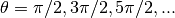, which leads to large spikes in the plots as values in the theta array come near those values. Of course, we don’t want the plot to extend all the way out to
. The problem is that diverges at 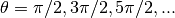, which leads to large spikes in the plots as values in the theta array come near those values. Of course, we don’t want the plot to extend all the way out to  in the direction, nor can it. Instead, we would like the plot to extend far enough that we get the idea of what is going on as
in the direction, nor can it. Instead, we would like the plot to extend far enough that we get the idea of what is going on as  , but we would still like to see the behavior of the graph near
, but we would still like to see the behavior of the graph near  . We can restrict the range of ytan values that are plotted using the MatPlotLib function ylim, as we demonstrate in the script below.
. We can restrict the range of ytan values that are plotted using the MatPlotLib function ylim, as we demonstrate in the script below.
import numpy as np
import matplotlib.pyplot as plt
theta = np.arange(0.01, 10., 0.04)
ytan = np.tan(theta)
plt.figure()
plt.plot(theta, ytan)
plt.ylim(-8, 8) # restricts range of y axis from -8 to +8
plt.axhline(color="gray", zorder=-1)
plt.show()
The figure produced by this script is shown below. The plot now looks much more like the familiar function we know. We have also include a call to the axline function to create an axis.
Tangent function (with spurious lines)
The vertical blue lines at 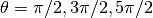 should not appear in a plot of vs . However, they do appear because the plot function simply draws lines between the data points in the x-y arrays provided in its arguments. Thus, plot draws a line between the very large positive and negative ytan values corresponding to the theta values on either side of  where diverges to . It would be nice to exclude that line.
where diverges to . It would be nice to exclude that line.
Masked arrays¶
We can exclude the data points near in the above plot, and thus avoid drawing the nearly vertical lines at those points, using NumPy’s masked array feature. The code below shows how this is done and produces the graph below. The masked array feature is implemented in line 6 with a call to NumPy’s masked_where function in the sub-module ma (masked array). Therefore, it is called by writing np.ma.masked_where. The masked_where function works as follows. The first argument sets the condition for masking elements of the array, which is specified by the second argument. In this case, the function says to mask all elements of the array ytan (the second argument) where the absolute value of ytan is greater than 20. The result is set equal to ytanM. When ytanM is plotted, MatPlotLib’s plot function omits all masked points from the plot. You can think of it as the plot function lifting the pen that is drawing the line in the plot when it comes to the masked points in the array ytanM.
Tangent function
1 2 3 4 5 6 7 8 9 10 11 12 13 | import numpy as np
import matplotlib.pyplot as plt
theta = np.arange(0.01, 10., 0.04)
ytan = np.tan(theta)
ytanM = np.ma.masked_where(np.abs(ytan)>20., ytan)
plt.figure()
plt.plot(theta, ytanM)
plt.ylim(-8, 8)
plt.axhline(color="gray", zorder=-1)
plt.show()
|
Subplots¶
Often you want to create two or more graphs and place them next to one another, generally because they are related to each other in some way. The plot below shows an example of such a plot. In the top graph, and 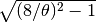 vs are plotted. The two curves cross each other at the points where  . In the bottom 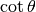 and
. In the bottom 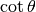 and  vs are plotted. These two curves cross each other at the points where 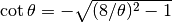.
vs are plotted. These two curves cross each other at the points where 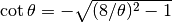.
Crossing functions
The code that produces this plot is provided below.
1 2 3 4 5 6 7 8 9 10 11 12 13 14 15 16 17 18 19 20 21 22 23 24 25 26 27 28 29 30 31 32 33 34 | import numpy as np
import matplotlib.pyplot as plt
theta = np.arange(0.01, 8., 0.04)
y = np.sqrt((8./theta)**2-1.)
ytan = np.tan(theta)
ytan = np.ma.masked_where(np.abs(ytan)>20., ytan)
ycot = 1./np.tan(theta)
ycot = np.ma.masked_where(np.abs(ycot)>20., ycot)
plt.figure(1)
plt.subplot(2, 1, 1)
plt.plot(theta, y)
plt.plot(theta, ytan)
plt.ylim(-8, 8)
plt.axhline(color="gray", zorder=-1)
plt.axvline(x=np.pi/2., color="gray", linestyle='--', zorder=-1)
plt.axvline(x=3.*np.pi/2., color="gray", linestyle='--', zorder=-1)
plt.axvline(x=5.*np.pi/2., color="gray", linestyle='--', zorder=-1)
plt.xlabel("theta")
plt.ylabel("tan(theta)")
plt.subplot(2, 1, 2)
plt.plot(theta, -y)
plt.plot(theta, ycot)
plt.ylim(-8, 8)
plt.axhline(color="gray", zorder=-1)
plt.axvline(x=np.pi, color="gray", linestyle='--', zorder=-1)
plt.axvline(x=2.*np.pi, color="gray", linestyle='--', zorder=-1)
plt.xlabel("theta")
plt.ylabel("cot(theta)")
plt.show()
|
The function subplot, called on lines 13 and 24, creates the two subplots in the above figure. subplot has three arguments. The first specifies the number of rows that the figure space is to be divided into; on line 13, it’s two. The second specifies the number of columns that the figure space is to be divided into; on line 13, it’s one. The third argument specifies which rectangle the will contain the plot specified by the following function calls. Line 13 specifies that the plotting commands that follow will be act on the first box. Line 24 specifies that the plotting commands that follow will be act on the second box.
We have also labeled the axes and included dashed vertical lines at the values of where and diverge.
Logarithmic plots¶
Data sets can span many orders of magnitude from fractional quantities much smaller than unity to values much larger than unity. In such cases it is often useful to plot the data on logarithmic axes.
Semi-log plots¶
For data sets that vary exponentially in the independent variable, it is often useful to use one or more logarithmic axes. Radioactive decay of unstable nuclei, for example, exhibits an exponential decrease in the number of particles emitted from the nuclei as a function of time. In the plot below, for example, we show the decay of the radioactive isotope Phosphorus-32 over a period of 6 months, where the radioactivity is measured once each week. Starting at a decay rate of nearly  electrons (counts) per second, the decay rate diminishes to only about 1 count per second after about 6 months or 180 days. If we plot counts per second as a function of time on a normal plot, as we have done in the plot on the left below, then the count rate is indistinguishable from zero after about 100 days. On the other hand, if we use a logarithmic axis for the count rate, as we have done in the plot on the right below, then we can follow the count rate well past 100 days and can readily distinguish it from zero. Moreover, if the data vary exponentially in time, then the data will fall along a straight line, as they do for the case of radioactive decay.
electrons (counts) per second, the decay rate diminishes to only about 1 count per second after about 6 months or 180 days. If we plot counts per second as a function of time on a normal plot, as we have done in the plot on the left below, then the count rate is indistinguishable from zero after about 100 days. On the other hand, if we use a logarithmic axis for the count rate, as we have done in the plot on the right below, then we can follow the count rate well past 100 days and can readily distinguish it from zero. Moreover, if the data vary exponentially in time, then the data will fall along a straight line, as they do for the case of radioactive decay.
Semi-log plotting
MatPlotLib provides two functions for making semi-logarithmic plots, semilogx and semilogy, for creating plots with logarithmic and axes, with linear and axes, respectively. We illustrate their use in the program below, which made the above plots.
1 2 3 4 5 6 7 8 9 10 11 12 13 14 15 16 17 18 19 20 21 22 23 24 25 26 27 28 29 30 31 32 33 | import numpy as np
import matplotlib.pyplot as plt
# read data from file
time, counts, unc = np.loadtxt('SemilogDemo.txt', unpack=True)
# create theoretical fitting curve
tau = 20.2 # Phosphorus-32 half life = 14 days; tau = t_half/ln(2)
N0 = 8200. # Initial count rate (per second)
t = np.linspace(0, 180, 128)
N = N0 * np.exp(-t/tau)
# create plot
plt.figure(1, figsize = (10,4) )
plt.subplot(1, 2, 1)
plt.plot(t, N, 'b-', label="theory")
plt.plot(time, counts, 'ro', label="data")
plt.xlabel('time (days)')
plt.ylabel('counts per second')
plt.legend(loc='upper right')
plt.subplot(1, 2, 2)
plt.semilogy(t, N, 'b-', label="theory")
plt.semilogy(time, counts, 'ro', label="data")
plt.xlabel('time (days)')
plt.ylabel('counts per second')
plt.legend(loc='upper right')
plt.tight_layout()
# display plot on screen
plt.show()
|
The semilogx and semilogy functions work the same way as the plot function. You just use one or the other depending on which axis you want to be logarithmic.
The tight_layout() function¶
You may have noticed the tight_layout() function, called without arguments on line 30 of the program. This is a convenience function that adjusts the sizes of the plots to make room for the axes labels. If it is not called, the -axis label of the right plot runs into the left plot. The tight_layout() function can also be useful in graphics windows with only one plot sometimes.
Log-log plots¶
MatPlotLib can also make log-log or double-logarithmic plots using the function loglog. It is useful when both the and data span many orders of magnitude. Data that are described by a power law 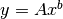, where  and
and  are constants, appear as straight lines when plotted on a log-log plot. Again, the loglog function works just like the plot function but with logarithmic axes.
are constants, appear as straight lines when plotted on a log-log plot. Again, the loglog function works just like the plot function but with logarithmic axes.
More advanced graphical output¶
The plotting methods introduced in the previous sections are perfectly adequate for basic plotting and are therefore recommended for simple graphical output. Here, we introduce an alternative syntax that harnesses the full power of MatPlotLib. It gives the user more options and greater control. Perhaps the most efficient way to learn this alternative syntax is to look at an example. The figure below illustrating Mulitple plots in the same window is produced by the following code:
Mulitple plots in the same window
1 2 3 4 5 6 7 8 9 10 11 12 13 14 15 16 17 18 19 20 21 22 23 24 25 26 27 28 29 30 31 32 33 34 35 36 37 38 39 40 41 42 43 44 45 46 47 48 49 50 51 52 53 | # Demonstrates the following:
# plotting logarithmic axes
# user-defined functions
# "where" function, NumPy array conditional
import numpy as np
import matplotlib.pyplot as plt
# Define the sinc function, with output for x=0 defined
# as a special case to avoid division by zero. The code
# below defining the sinc function is developed and
# explained in Chapter 7, Section 1.
def s(x):
a = np.where(x==0., 1., np.sin(x)/x)
return a
# create arrays for plotting
x = np.arange(0., 10., 0.1)
y = np.exp(x)
t = np.linspace(-10., 10., 100)
z = s(t)
# create a figure window
fig = plt.figure(1, figsize=(9,8))
# subplot: linear plot of exponential
ax1 = fig.add_subplot(2,2,1)
ax1.plot(x, y)
ax1.set_xlabel('time (ms)')
ax1.set_ylabel('distance (mm)')
ax1.set_title('exponential')
# subplot: semi-log plot of exponential
ax2 = fig.add_subplot(2,2,2)
ax2.plot(x, y)
ax2.set_yscale('log')
ax2.set_xlabel('time (ms)')
ax2.set_ylabel('distance (mm)')
ax2.set_title('exponential')
# subplot: wide subplot of sinc function
ax3 = fig.add_subplot(2,1,2)
ax3.plot(t, z, 'r')
ax3.axhline(color='gray')
ax3.axvline(color='gray')
ax3.set_xlabel('angle (deg)')
ax3.set_ylabel('electric field')
ax3.set_title('sinc function')
# Adjusts white space to avoid collisions between subplots
fig.tight_layout()
plt.show()
|
After defining several arrays for plotting, the above program opens a figure window in line 23 with the statement
fig = plt.figure(figsize=(9,8))
The MatPlotLib statement above creates a Figure object, assigns it the name fig, and opens a blank figure window. Thus, just as we give lists, arrays, and numbers variable names (e.g. a = [1, 2, 5, 7], dd = np.array([2.3, 5.1, 3.9]), or st = 4.3), we can give a figure object and the window in creates a name: here it is fig. In fact we can use the figure function to open up multiple figure objects with different figure windows. The statements
fig1 = plt.figure()
fig2 = plt.figure()
open up two separate windows, one named fig1 and the other fig2. We can then use the names fig1 and fig2 to plot things in either window. The figure function need not take any arguments if you are satisfied with the default settings such as the figure size and the background color. On the other hane, by supplying one or more keyword arguments, you can customize the figure size, the background color, and a few other properties. For example, in the program listing (line 23), the keyword argument figsize sets the width and height of the figure window; the default size is (8, 6); in our program we set it to (9, 8), which is a bit wider and higher than the default size. In the example above, we also choose to open only a single window, hence the single figure call.
The fig.add_subplot(2,2,1) in line 30 is a MatPlotLib function that divides the figure window into 2 rows (the first argument) and 2 columns (the second argument). The third argument creates a subplot in the first of the 4 subregions (i.e. of the 2 rows  2 columns) created by the fig.add_subplot(2,2,1) call. To see how this works, type the following code into a Python module and run it:
2 columns) created by the fig.add_subplot(2,2,1) call. To see how this works, type the following code into a Python module and run it:
1 2 3 4 5 6 7 | import numpy as np
import matplotlib.pyplot as plt
fig = plt.figure(figsize=(9,8))
ax1 = fig.add_subplot(2,2,1)
plt.show()
|
You should get a figure window with axes drawn in the upper left quadrant. The fig. prefix used with the add_subplot(2,2,1) function directs Python to draw these axes in the figure window named fig. If we had opened two figure windows, changing the prefix to correspond to the name of one or the other of the figure windows would direct the axes to be drawn in the appropriate window. Writing ax1 = fig.add_subplot(2,2,1) assigns the name ax1 to the axes in the upper left quadrant of the figure window.
The ax1.plot(x, y) in line 27 directs Python to plot the previously-defined x and y arrays onto the axes named ax1. The ax2 = fig.add_subplot(2,2,2) draws axes in the second, or upper right, quadrant of the figure window. The ax3 = fig.add_subplot(2,1,2) divides the figure window into 2 rows (first argument) and 1 column (second argument), creates axes in the second or these two sections, and assigns those axes (i.e. that subplot) the name ax3. That is, it divides the figure window into 2 halves, top and bottom, and then draws axes in the half number 2 (the third argument), or lower half of the figure window.
You may have noticed in above code that some of the function calls are a bit different from those used before: xlabel(’time (ms)’) becomes set_xlabel(’time (ms)’), title(’exponential’) becomes set_title(’exponential’), etc.
The call ax2.set_yscale('log') sets the -axes in the second plot to be logarithmic, thus creating a semi-log plot. Creating properly-labeled logarthmic axes like this is more straightforward with the advanced syntax illustrated in the above example.
Using the prefixes ax1, ax2, or ax3, direct graphical instructions to their respective subplots. By creating and specifying names for the different figure windows and subplots within them, you access the different plot windows more efficiently. For example, the following code makes four identical subplots in a single figure window using a for loop.
In [1]: fig = figure()
In [2]: ax1 = fig.add_subplot(221)
In [3]: ax2 = fig.add_subplot(222)
In [4]: ax3 = fig.add_subplot(223)
In [5]: ax4 = fig.add_subplot(224)
In [6]: for ax in [ax1, ax2, ax3, ax4]:
...: ax.plot([3,5,8],[6,3,1])
In [7]: show()
Exercises¶
Plot the function 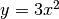 for 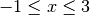 as a continuous line. Include enough points so that the curve you plot appears smooth. Label the axes
and .Plot the following function for 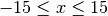:

Include enough points so that the curve you plot appears smooth. Label the axes
and .Plot the functions
 and
and  vs on the same plot with going from
vs on the same plot with going from  to
to  . Make sure the limits of -axis do not extend beyond the limits of the data. Plot in the color green and in the color black and include a legend to label the two curves. Place the legend within the plot, but such that it does not cover either of the sine or cosine traces.
. Make sure the limits of -axis do not extend beyond the limits of the data. Plot in the color green and in the color black and include a legend to label the two curves. Place the legend within the plot, but such that it does not cover either of the sine or cosine traces.Create a data file with the data shown below.
Read the data into Python program and plot
 vs using circles for data points with error bars. Use the data in the dy column as the error estimates for the data. Label the horizontal and vertical axes “time (s)” and “position (cm)”.
vs using circles for data points with error bars. Use the data in the dy column as the error estimates for the data. Label the horizontal and vertical axes “time (s)” and “position (cm)”.On the same graph, plot the function below as a smooth line. Make the line pass behind the data points.
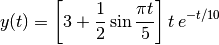
1 2 3 4 5 6 7 8 9 10 11 12 13 14 15 16 17 18
Data for Exercise 4 Date: 16-Aug-2013 Data taken by Lauren and John t d dy 1.0 2.94 0.7 4.5 8.29 1.2 8.0 9.36 1.2 11.5 11.60 1.4 15.0 9.32 1.3 18.5 7.75 1.1 22.0 8.06 1.2 25.5 5.60 1.0 29.0 4.50 0.8 32.5 4.01 0.8 36.0 2.62 0.7 39.5 1.70 0.6 43.0 2.03 0.6
Use MatPlotLib’s function hist along with NumPy’s function’s random.rand and random.randn to create the histogram graphs shown in Fig. Histograms of random numbers.
Plot force vs distance with error bars using the following data:
d=np.array([0.38, 0.64, 0.91, 1.26, 1.41, 1.66, 1.90, 2.18]) f=np.array([1.4, 1.65, 3.0, 3.95, 4.3, 5.20, 6.85, 7.4]) df=np.array([ 0.4, 0.5, 0.4, 0.5, 0.6, 0.5, 0.5, 0.4])
Your plot should also include a visual straight “best fit” to the data as well as visual “fits” that give the smallest and largest slopes consistent with the data. Note, you only need two points to define a straight line so the straight lines you draw on the plot should be arrays of length 2 and no longer. All of your fitted lines should lie behind the data. Try to make your plot look like the one below. In addition, add a legend to your plot the gives the slope with its uncertainty obtained from your visual fits to the data.
The web page http://matplotlib.org/api/pyplot_summary.html gives a summary of the main plotting commands available in MatPlotLib. The two important ones here are plot and errorbar, which make regular plots and plots with error bars, respectively. You will find the following keyword arguments useful: yerr, ls, marker, mfc, mec, ms, and ecolor, which you can find described by clicking on the errorbar function link on the web page cited above.
The data file below shows data obtained for the displacement (position) vs time of a falling object, together with the estimated uncertainty in the displacement.
1 2 3 4 5 6 7 8 9 10 11 12 13 14 15 16 17 18 19 20 21 22 23 24 25
Measurements of fall velocity vs time Taken by A.P. Crawford and S.M. Torres 19-Sep-13 time (s) position (m) uncertainty (m) 0.0 0.0 0.04 0.5 1.3 0.12 1.0 5.1 0.2 1.5 10.9 0.3 2.0 18.9 0.4 2.5 28.7 0.4 3.0 40.3 0.5 3.5 53.1 0.6 4.0 67.5 0.6 4.5 82.3 0.6 5.0 97.6 0.7 5.5 113.8 0.7 6.0 131.2 0.7 6.5 148.5 0.7 7.0 166.2 0.7 7.5 184.2 0.7 8.0 201.6 0.7 8.5 220.1 0.7 9.0 238.3 0.7 9.5 256.5 0.7 10.0 275.6 0.8
- Use these data to calculate the velocity and acceleration (in a Python program .py file), together with their uncertainties propagated from the displacement vs time uncertainties. Be sure to calculate time arrays corresponding the midpoint in time between the two displacements or velocities for the velocity and acceleration arrays, respectively.
- In a single window frame, make three vertically stacked plots of the displacement, velocity, and acceleration vs time. Show the error bars on the different plots. Make sure that the time axes of all three plots cover the same range of times. Why do the relative sizes of the error bars grow progressively greater as one progresses from displacement to velocity to acceleration?